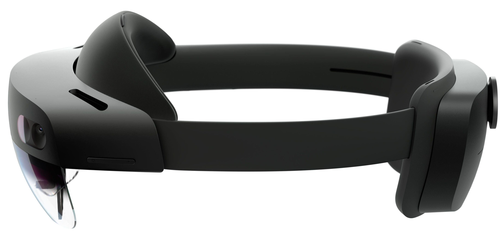

2022-04-18
I’ve been interested in virtual reality (VR) and augmented reality (AR) recently as the use case for the system(s) I’m working on in my MPhil project. This blog post will cover my development experience in porting my cubes game to both VR and AR, and give a small demo for the latter.
Microsoft Windows was used for easy of development with Unity, and as it’s a hard requirement for the AR headset made by Microsoft.
The Oculus Quest 2 from Meta (formally Facebook) is a VR headset running an Android derivative. This means you can do cool stuff like run Termux on it (an Android terminal emulator and unvirtualised Linux environment). It’s nowhere near as good for productivity as something like what SimulaVR are doing, which features a neat Haskell Wayland compositor.
With access to the Oculus Quest 2 , I was first able to explore the world of free games on the Oculus store.
I quickly found it outlived it’s novelty however, and as I’ve always enjoyed making things more than using then I moved on to try and develop something for the headset. Instead of creating something brand new, I decided to try and port my existing cubes game created back at the end of my final undergrad year.
Development for the Quest is quite a polished experience, although I may only be saying this in hindsight after developing for the Hololens. Bar some linkrot, the documentation covers setting up a development environment and creating an app. The basic gist is install Unity with some Android and VR support plugins. You also need either developer mode to sideload apps, a compatible USB-C cable, or Oculus Air Link with WiFi that plays nice. I opted for the latter. With some modifications to the scene camera and the movement script it was good to go.
UX for VR is a whole different ball game - but it didn’t give nearly as much nausea as it might have.
Many thanks to Paul Johnson for lending me this device.
See the source code here.

The Microsoft Hololens 2 from Microsoft is an AR headset running the “Windows Holographic” OS - essentially a 64bit ARM version of windows with a spatial window manager. This was a real pain as it turns out it doesn’t support Win32 applications - which killed my dreams of running the Windows Terminal on it. See this GitHub issue for more info
Aside from being hostile to hacking, the development experience was quite horrible. Recalling from memory, the development environment setup steps were something like:
Having started to use the nix package manager recently this is basically exactly the dependency and reproducibility headache I’m trying to avoid.
To their credit, the Visual Studio remote machine running over the local network worked very well once it was setup: enabling developer mode, pairing the device, and obtaining the IP address. The device portal API also proved very useful in watching a real time feed of user’s POV.
This article proved the most useful in setting up the development environment.
The modifications to the project were more significant than for the Quest 2 but mainly boiled down to getting things working the way the Microsoft Mixed Reality Toolkit (MRTK) wanted.
Many thanks to Anil Madhavapeddy for lending me this device.
See the source code here.
See a demo of this game on the Hololens 2 with some willing participants below.